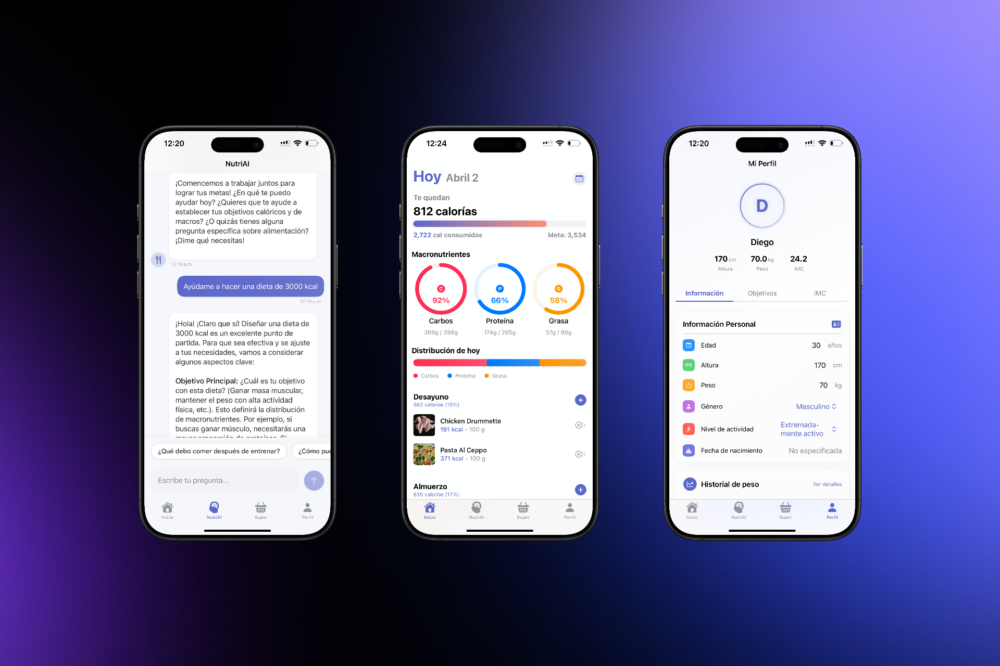

01
Selected Work
A showcase of my technical projects and applications
Real Madrid Store App
iOS application enhancing fan shopping experience with gamification and personalized offers.

Stock Market Prediction
LSTM neural networks for accurate stock price forecasting with technical indicators.
Rising Stars Identification
Data filtering and ML algorithms for identifying emerging academic talent.
Wave Detection System
Advanced signal processing for wave pattern detection and analysis.

Calorie Tracking App
Comprehensive nutrition and calorie tracking with AI-powered recommendations.
Fashion-MNIST Classification
CNN implementation for fashion image recognition with high accuracy.
02
Technical Skills
Technologies and skills I've mastered throughout my journey
Mobile Development
Swift
iOS Development
SwiftUI
React Native
Data Science
Python
Machine Learning
Data Analysis
TensorFlow
Other Skills
Mathematics
Firebase
Signal Processing
Git
03
Work Experience
Professional journey and accomplishments
Jun 2022 - Jan 2023
Software Engineer Internship
IBERIA GROUP ENGINEERING & CONSULTING MEXICO
Mexico City Metropolitan Area · On-site
- Developed a website and mobile app for the agricultural sector marketplace
- Created company estimates using Excel data analysis
- Contributed code and ideas for both iOS and Android platforms
- Built complementary agricultural sector website
- Utilized Power BI for data visualization and business analytics